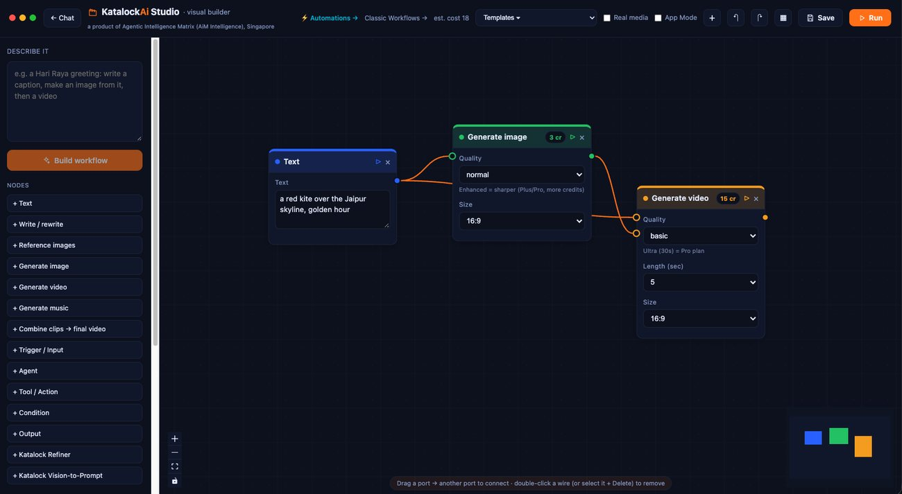
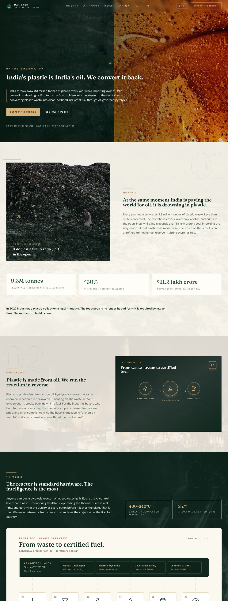
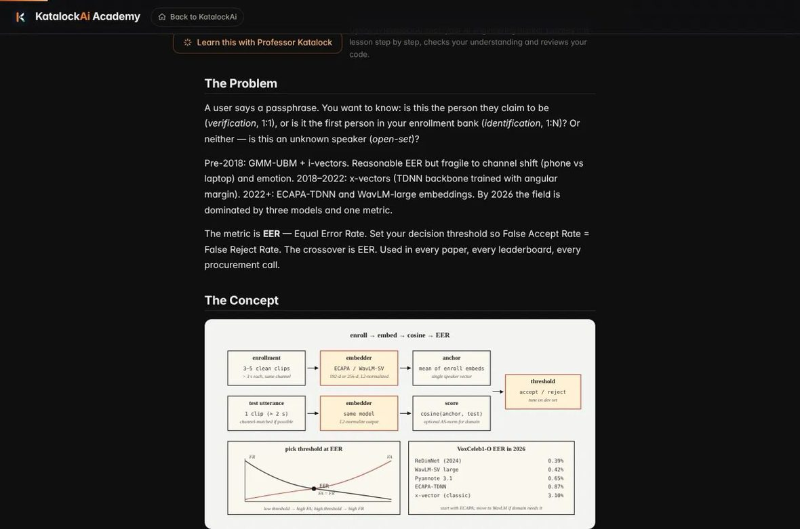
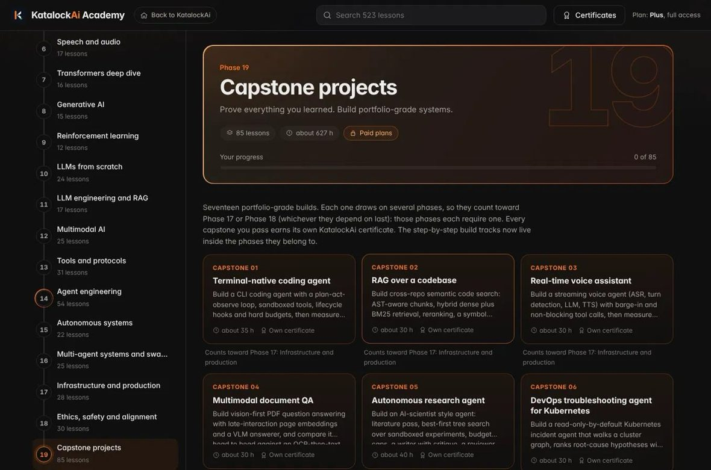
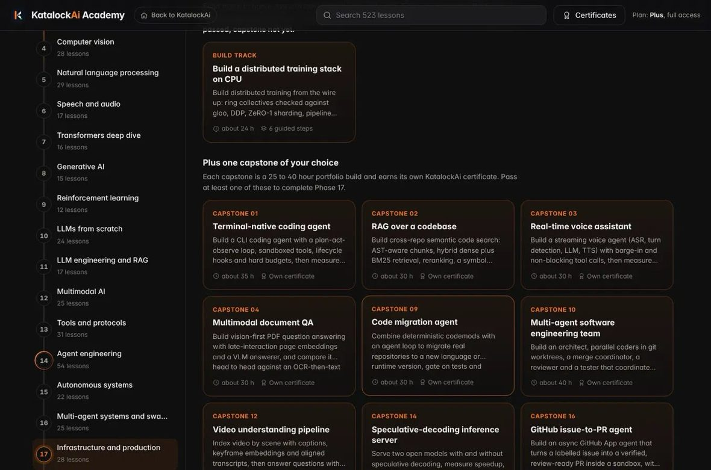
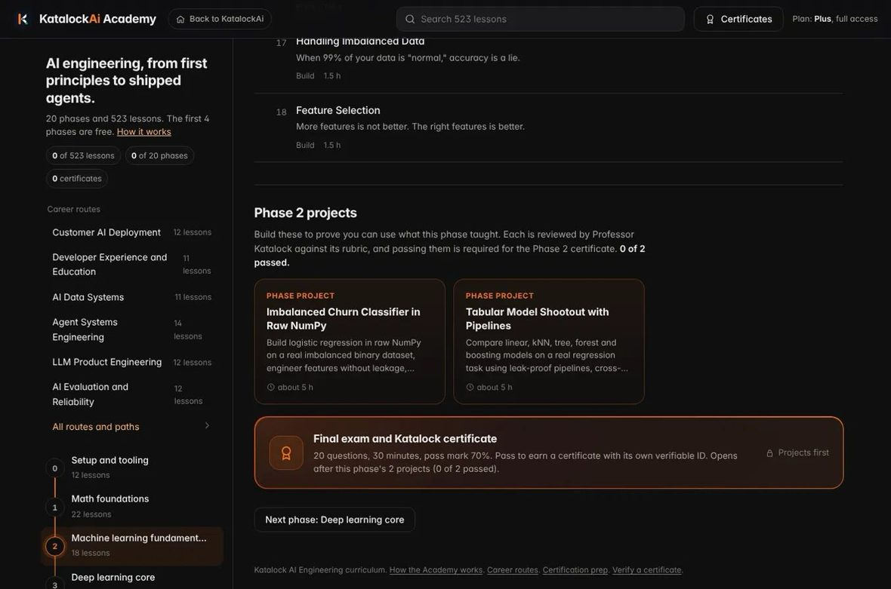
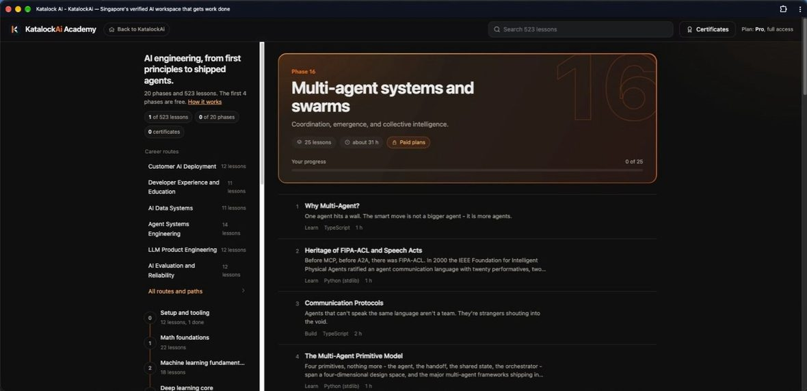

3live AI products I architect — workspace, Academy, AIM OS
523lessons across 20 phases of AI engineering I designed
2client websites shipped with KatalockAi, plus AI video output
10+ yrsrunning real operations before AI — resorts, logistics, retail
KatalockAi is a live, global, multilingual agentic AI workspace I architect single-handedly — real orchestration and verification infrastructure, not a thin wrapper on someone else's API. The LLM is localised for India, Singapore and Indonesia. This is a tour of what I've built, what it has produced for real clients, and the curriculum I wrote to teach it.
ONE AI WORKSPACE · CHATS · RESEARCHES · BUILDS · AUTOMATES
Give it a task. Katalock gets it DONE.
One AI workspace that chats, researches, builds, and automates — in your language.
Give Katalock a task — draft it, research it, build it, automate it…
+Deep researchK-Computer↑
Draft a GST tax invoiceWrite a Hari Raya WhatsApp offerResearch my competitorsBuild me a landing page
02Global by design — the LLM, localised per market
IN
India
Built for India
English · Hindi · Kannada · Tamil · Telugu
Currency · INR
SG
Singapore
Built for Singapore
English · Bahasa Melayu · Mandarin · Tamil
Currency · SGD
ID
Indonesia
Built for Indonesia
Bahasa Indonesia · English
Currency · IDR
KatalockAi is global. India, Singapore and Indonesia are launch markets where model, language and currency are localised — more are being added.
03Real infrastructure, not a wrapper
K-Computer — cross-model verification
Fires multiple independent model passes, cross-checks them, reconciles disagreements, and returns one answer with a confidence level.
Verified answer
✓ 3 of 3 models agree on the core claim
ConfidenceHigh · 92%
Model A ✓Model B ✓Model C ✓1 claim flagged
Supervised browser automation
Operates a browser on the user's behalf, step by step — and pauses before any submit or payment for approval.
Action gate
Paused — awaiting approval before “Submit payment”
open ✓fill ✓review ✓submit · hold
Live workflow graph
Every build or agent run renders as a status-coloured dependency map — resolving in real time.
Run · orchestration
Research→Plan→Build→Verify
Evidence-ledger CRM
Every field is marked green, amber or red by how well its sources agree — data integrity, not autocomplete.
CompanyAcme Clinics Pte Ltd
Websiteacmeclinics.sg
Headcount~40 (one source)
Emailunconfirmed — needs review
In-workspace code sandbox
Builds and runs code on a live dev server, publishes to a link, and pushes to GitHub — beside research and media.
Sandbox
build ✓run · dev server ✓publish ✓push → GitHub ✓
Its own model stack
Named model tiers (lucy, tara, stargazer, aim) on its own routing stack, with anti-hallucination governance across every agent — not a reseller of one API.
Governance
Anti-slop · cross-model routing · atomic wallet · RLS on every table
katalock.net · Katalock Studio

KatalockAi Studio — the visual workflow builder: drag nodes (Text, Generate image/video/music, Agent, Tool/Action, Condition, Katalock Refiner, Vision-to-Prompt), wire them, see live credit cost, and run. Real, not a mockup.
04Built with KatalockAi — real output for real clients
The workspace is judged by what it ships. Below is unedited output: an AI-generated interior-staging video, and two production websites live on their own domains today.
KatalockAi · video generation
AI video · interior staging
Empty shell → furnished living room, in one generation
An 18-second, 1080p walkthrough generated in KatalockAi: the camera holds on a bare double-height room while furniture, joinery and lighting build in, consistent across frames.
The use case is property marketing — virtual staging for agents and developers without a shoot. It draws on my decade as a project director on fit-outs for Marina Bay Sands and Resorts World Sentosa.
0s · empty18s · staged
igniseco.com

Hover to scroll
Ignis Eco — plastic-to-fuel venture
Investor-facing story site for a Bengaluru pyrolysis company: the crisis, the process, the plant, team and FAQ, with a language switcher. Built in KatalockAi; I also lead the venture's investor relations and go-to-market.
A working AI product, not a brochure: the visitor picks a reader persona and a spread, asks a question, and gets a reading in their own language. Freemium (3 free questions a month), sign-in, reviews, and a hand-off to a real reader.
Screenshots captured from the live sites in October 2026. “Try it live here” loads the real site inside this page.
05KatalockAi Academy — the curriculum I designed
A full AI-engineering curriculum I architected and built inside the product: from the maths behind neural networks to agents running in production. 523 lessons across 20 phases, six role-based career routes, Professor Katalock reviewing every project against a rubric, and certificates with verifiable IDs. First 4 phases free.
20
Phases
523
Lessons
6
Career routes
6
Skill paths
17
Capstones
The full path — 20 phases
Foundations · free
00Setup & tooling12 lessons
01Math foundations22 lessons
02Machine learning fundamentals18 lessons
03Deep learning core13 lessons
AI domains
04Computer vision28 lessons
05Natural language processing29 lessons
06Speech & audio17 lessons
07Transformers deep dive16 lessons
08Generative AI15 lessons
09Reinforcement learning12 lessons
Large language models
10LLMs from scratch24 lessons
11LLM engineering & RAG17 lessons
12Multimodal AI25 lessons
Agents
13Tools & protocols31 lessons
14Agent engineering54 lessons · largest phase
15Autonomous systems22 lessons
16Multi-agent systems & swarms25 lessons
Production & safety
17Infrastructure & production28 lessons
18Ethics, safety & alignment30 lessons
19Capstone projects17 capstones, each certified
Depth I wrote and can teach
⚙Inference & serving
Running LLMs in production at scale, and what each serving engine trades off.
The Academy landing — positioned around how AI is reshaping work, backed by cited data, with the full 20-phase path.
The moat · Professor Katalock
Professor Katalock is a Socratic AI mentor embedded in every lesson. It doesn't dump content — it teaches step by step, checks understanding, reviews the student's code, flags edge cases, and reveals the full solution only after the student has tried.
It teaches from the lesson material rather than video, so updating a lesson updates the teaching. And every student experiences the product's depth firsthand — they come for the Academy, they stay for the workspace.

A real lesson — speaker verification (EER) — with the “Learn this with Professor Katalock” tutor and a from-scratch architecture diagram.
Inside the curriculum

Phase 19 · Capstone projects — portfolio-grade builds, each earning its own verifiable certificate.

Phase 17 · Infrastructure & production — build tracks plus capstones like a GitHub issue-to-PR agent.

Projects graded by Professor Katalock against a rubric, then a final exam and a certificate with a verifiable ID.

Phase 16 · Multi-agent systems & swarms — one of 20 phases, first principles to shipped agents.
06AIM OS — a governed operating system for agents
50+Integrated apps
108API endpoints
27+Autonomous agents
~80Database tables
QGov · Sentinel · killswitch
A policy engine decides what agents may do, a safety monitor watches what they actually do, and a founder killswitch stops everything if they cross a boundary.
Nexus Hub orchestration
Intent routing across agents, a pg-boss async job queue with automatic retries, and offline-first real-time collaboration on Yjs CRDTs.
Forward-deployed work is half engineering, half operations. I spent ten years accountable for budgets, SLAs and on-site delivery before writing agents — so I build AI the way operators need it: verified, gated, and recoverable.
AI Platform Architect & Co-Founder · KatalockAi
2026 – present
Own backend architecture, agent orchestration and infrastructure for the workspace. Built K-Computer verification, gated browser automation, the evidence-ledger CRM, the code sandbox, and an atomic credit wallet behind row-level security. Delivered client AI products (Tarot with Shilpa, the Ignis Eco site) and done-for-you AI for SMEs: multilingual voice desks, social storefronts, automated hiring.
Architect & Founder · KatalockAi Academy
2026 – present
Designed the 20-phase, 523-lesson curriculum, six career routes, and Professor Katalock, the Socratic tutor that reviews student code against rubrics.
Founder & AI Platform Architect · AIM OS (aimglobal.io)
2023 – present
Architected a governed agent OS: 50+ apps, 108 endpoints, 27+ agents, with QGov, Sentinel and Nexus Hub.
Co-Founder, IR & GTM · Ignis Eco (igniseco.com)
2026 – present
Investor relations, seed-stage capital structuring and go-to-market for a plastic-to-fuel venture in Tamil Nadu and Bengaluru. Built its website with KatalockAi.
Ran enterprise logistics technology for IKEA Singapore: 99.8% on-time across 5,000+ daily orders, incident resolution 25% faster.
Co-Founder & Operations Director · Freda'D / DGCC Investment
2014 – 2024 · concurrent
Grew a bootstrapped fragrance business from $500 to a profitable international company supplying luxury hotels in Asia and the Middle East: 25% YoY growth, automation that cut overhead 30%.
Project Director · HH Design / Interior Producer
2010 – 2020
Delivered integrated-resort fit-outs including Marina Bay Sands Casino and Resorts World Sentosa, on $500K–$5M budgets, with timelines improved 15%.
IBM Full Stack Software Developer Professional Certificate (2024)
Google AI & Machine Learning Professional Certificate (2024)
Google Cybersecurity Professional Certificate (2024)
Languages — English, Malay
Looking for someone to put AI in front of real customers?
I'm open to forward-deployed, solutions and applied AI engineering roles, in Singapore or anywhere globally. Available immediately or on two weeks' notice.
Katalock Studio, all KatalockAi Academy panels, the client-site captures and the video are real product output. The remaining workspace panels (homepage, markets, feature cards) are styled representations — see the live product at katalock.net.